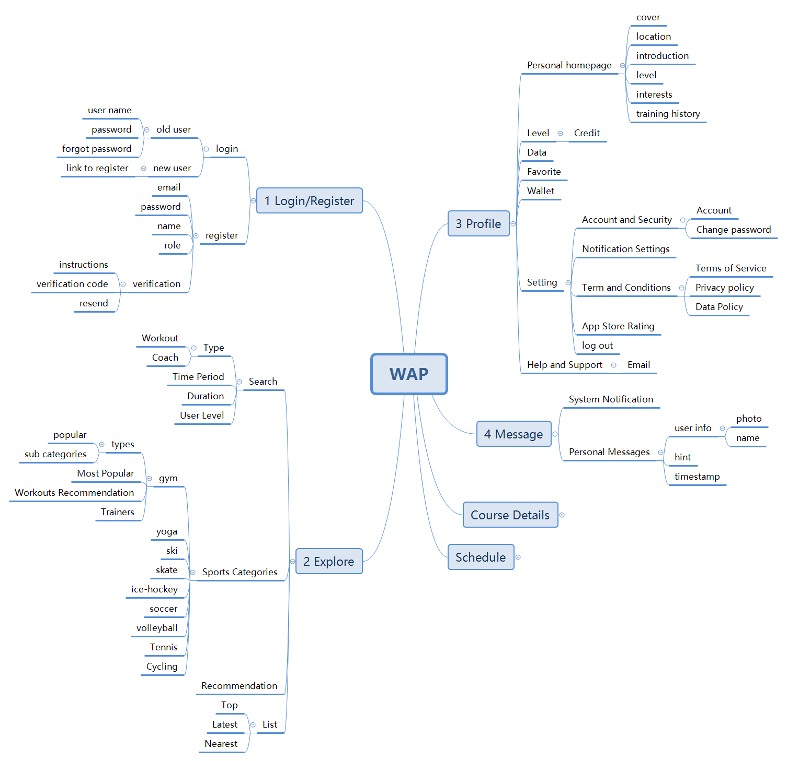
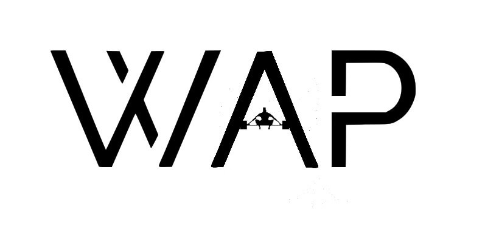
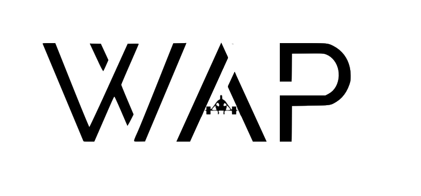
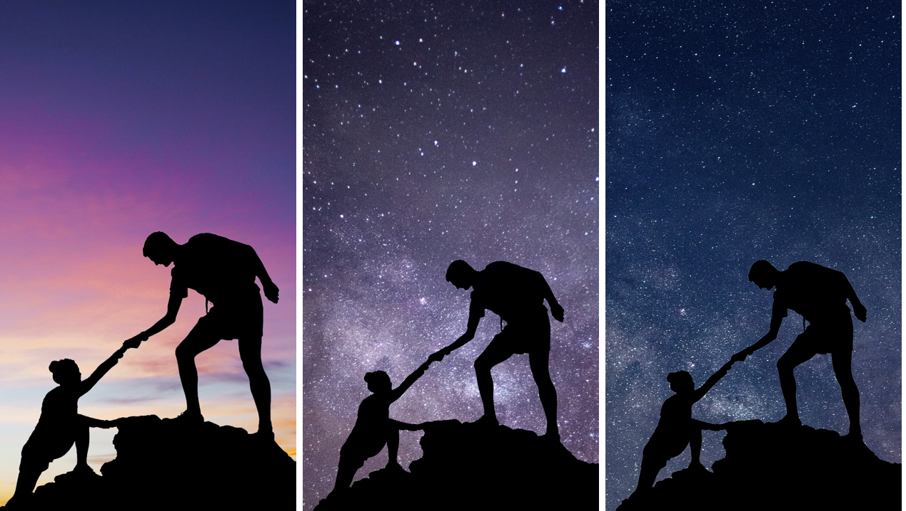
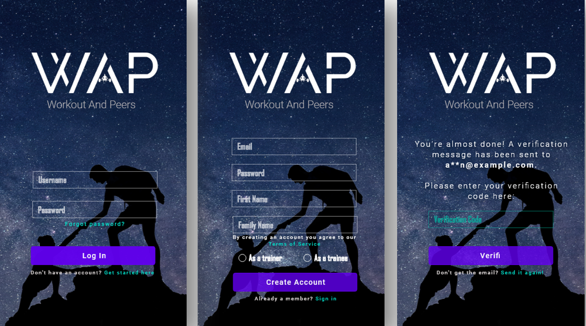
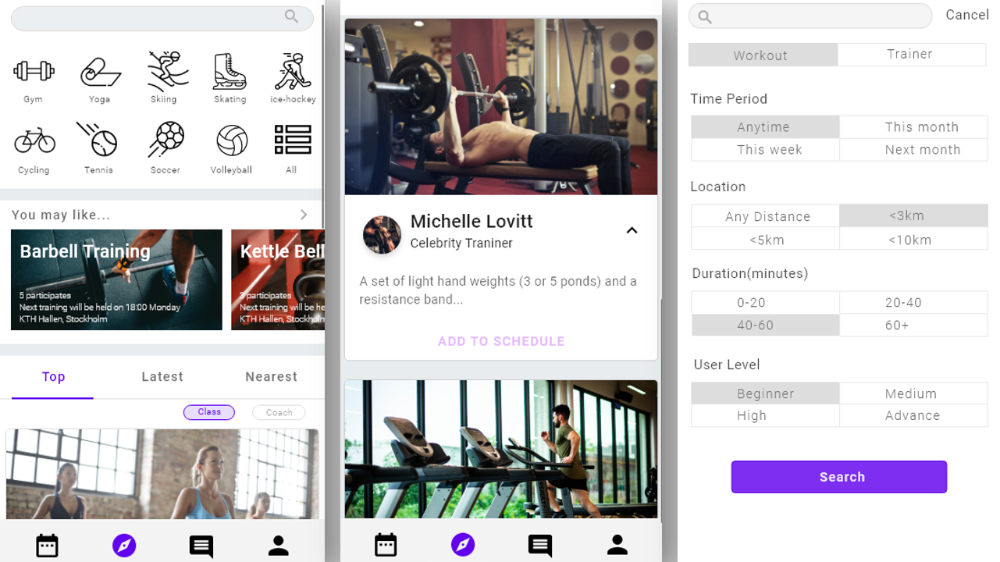
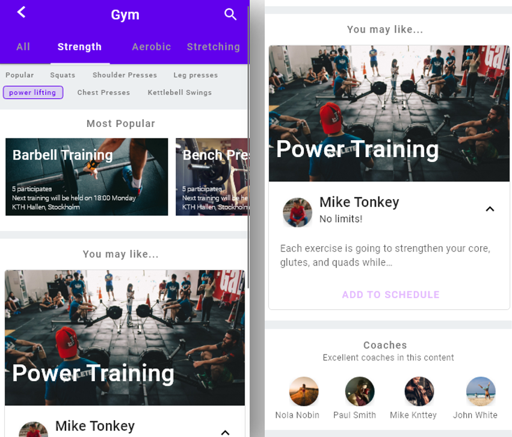
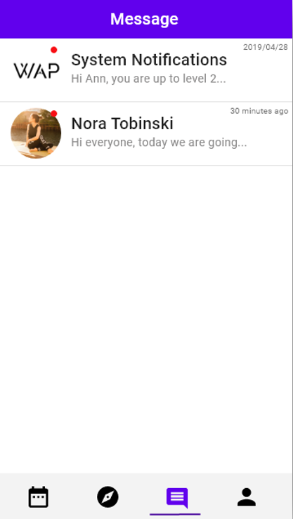
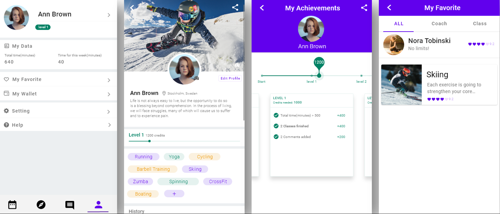
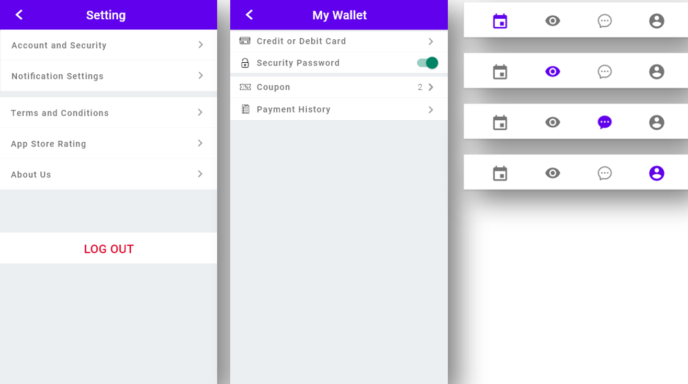

WAP

UI Design Mobile Prototyping Adobe XD Photoshop
The interactive prototype of this project can be viewed here: WAP – Workout and Peers.
ContentS
Introduction
Mindmap of Design
Logo Design
UI/UX Design
XML Layouts
Conclusion
Introduction
WAP is a smartphone application (demo) which connects fitness trainers and trainees directly, allowing well-experienced Gym-goers to train those who are interested in working out, as well as allowing in-experienced users to host activities and search for people on their level to work out together. This project is done by a group of 8 international students in the course: Business Development Lab (KTH University, Sweden, 2019), and got a grade of A in the end.
In my role as a UI/UX designer, I created 60% of the prototype with Adobe XD, and 60% of the XML files declaring UI elements and layouts with Android Studio. Here are some main steps of my design process:
Mindmap of Design
Personally speaking, I like to use mindmap to sort the thoughts and build up the information structure while designing. In this project, the prototype is consisted of 6 parts in total: 1-Login/Register, 2-Explore, 3-Message, 4-Profile, 5-Schedule and 6-Course Details, while 1-4 of those are created by me:

Logo Design
The original design of the logo is created by Colin who is the other designer in our team:

What I did here is to make a small adjustment to the letter A with Photoshop, so that the three letters are in a consistent style. Our team finally decided to use this one as our logo:

UI/UX Design
Design Space
Since we are two people to work together for the design work, it is important for us to have a consistent design style. And considering that the app would be deployed in Android platform, we then decide to use the Google Material Design as guidelines to instruct the design in terms of the color, layout, shape and etc.Login / Register Page
Firstly, I want to talk about the design for the background picture of login/register page. This page is the first page of the app, and in my opinion it should in some way provide users with insights about the app. In this case, the keywords of our app are: workout, peers, sharing and helping, thus I used a picture of two people climbing the mountain together since the climbing activity can represent the workout activities, two people can represent peers, and the action of the two subjects can represent sharing and helping.
I designed several versions of this picture, but it turned out the last one could match the color of texts and buttons best:
Explore Page
The aim of the explore page is to help users search and find activities they are interested in. Here are some considerations in the design process:
- Search
The search function should help users find the target activities, thus I added some filter options like location and user level, so that users could reach the targeted results in fewer search times. - 10 icons in the top
I used icons with monocolor since there would be many colorful cover pictures in this page, and I hope users could focus more on the recommended activities on this page. The nine subcategories were selected based on previous survey data collected by our team, as well as the online data about the most popular sports activities in Europe. The Gym icon is placed in the first position since the users of our app would mainly be people in Gym. - Recommended activity
The activity cards are designed to show information of the activity with big titles and relevant background pictures. According to the results of user testing, it is also better to tell users information about the current number of participants, location, and the schedule as well. - List
There are mainly three lists for recommendation: most popular, newly updated and nearby activities. Top list is designed to recommend popular activities based on most people’s choices. Latest list provides opportunities for new activities to be seen by people. Nearest list is designed to show nearby activities based on user’s location. - Gym page
In this page, I put subcategories of gym activities on the top to help users find the target activities more conveniently. To get the subcategories, I went through several gym websites and learned from their ways of setting categories. I also searched in Quora about how experienced trainers classify the GYM activities.

- Search
Message Page
There are 2 kinds of messages in this page: system messages and personal messages. For the design part, basically the message tab should have a title, an avatar, and also some hints about the contents. I added a red points to indicate unread messages and a timestamp of the receiving time. Within one day, the timestamp would be “XX minutes/hours ago” to inform users the timeliness more directly.
User Profile Page
There are 3 main function points in this page: Personal homepage for summarizing and sharing, personal data and achievements, and setting. The achievement part is aiming to increase users’ engagement with our app by involving uses with the ranking system. Users will reach higher levels by finishing tasks. Sharing personal homepage and achievements could also act as incentives for users to keep using this app.
Other
General design for app settings.

Created Layout Files with Android Studio
The project is designed to be deployed on android system. In this case, I was also responsible to help create XML layout files with Android Studio. It seemed quite hard to me in the beginning since I had no coding experience in this field, and just installing the software had already cost much time of me. But I am really glad that I did not give up trying this. I got lots of help from the engineers in our team and also learned something new from this. For example, I learned how to export images with different resolutions from Adobe XD, and how to use them in android studio to adapt to different size of screens, and I learned to use different layout frames to implement the XML page.
The process how I tried to learn to do the android coding thing is valuable to me, which makes me feel more positive and confident to learn new things.
Conclusion
Though there is still much progress to be made for this design, for example, we should do more user testing to evaluate the prototype, for me it is still a good chance to learn and practice my skills in user interface design.